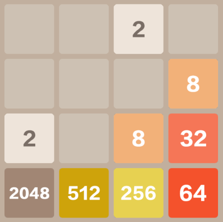
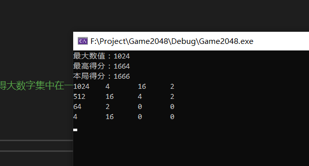
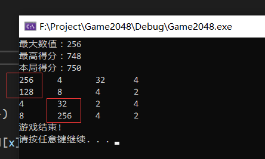

<!DOCTYPE html>
<html>
<head><meta name="generator" content="Hexo 3.9.0">
  <!-- hexo-inject:begin --><!-- hexo-inject:end --><meta charset="utf-8">
  <meta http-equiv="X-UA-Compatible" content="IE=edge">
  
  <title>2048 游戏AI的实现思路 | uint128&#39;s Blog</title>
  <meta name="description" content>
  <meta name="keywords" content>
  <meta name="HandheldFriendly" content="True">
  <meta name="apple-mobile-web-app-capable" content="yes">
  <link rel="shortcut icon" href="/">
  <link rel="alternate" href="/atom.xml" title="uint128's Blog">
  <meta name="viewport" content="width=device-width, initial-scale=1, maximum-scale=1">
  <meta name="description" content="2048 游戏AI的实现思路">
<meta name="keywords" content="C++">
<meta property="og:type" content="article">
<meta property="og:title" content="2048 游戏AI的实现思路">
<meta property="og:url" content="https://uint128.com/2020/01/21/2048-游戏AI的实现思路/index.html">
<meta property="og:site_name" content="uint128&#39;s Blog">
<meta property="og:description" content="2048 游戏AI的实现思路">
<meta property="og:locale" content="zh-cn">
<meta property="og:image" content="https://uint128.com/2020/01/21/2048-游戏AI的实现思路/img-1.png">
<meta property="og:image" content="https://uint128.com/2020/01/21/2048-游戏AI的实现思路/img-2.png">
<meta property="og:image" content="https://uint128.com/2020/01/21/2048-游戏AI的实现思路/img-3.png">
<meta property="og:updated_time" content="2020-01-20T19:50:37.284Z">
<meta name="twitter:card" content="summary">
<meta name="twitter:title" content="2048 游戏AI的实现思路">
<meta name="twitter:description" content="2048 游戏AI的实现思路">
<meta name="twitter:image" content="https://uint128.com/2020/01/21/2048-游戏AI的实现思路/img-1.png">
    
  <link href="https://fonts.googleapis.com/css?family=Inconsolata|Titillium+Web" rel="stylesheet">
  <link href="https://fonts.googleapis.com/css?family=Roboto+Mono" rel="stylesheet">
  <link href="//cdnjs.cloudflare.com/ajax/libs/node-waves/0.7.5/waves.min.css" rel="stylesheet">
  <link rel="stylesheet" href="/style.css">
  <script>
    function setLoadingBarProgress(num) {
      document.getElementById('loading-bar').style.width=num+"%";
    }
  </script>
  <script src="/js/md5.js"></script>
<link rel="alternate" href="/atom.xml" title="uint128's Blog" type="application/atom+xml"><!-- hexo-inject:begin --><!-- hexo-inject:end -->
</head>
</html>
<body>
  <!-- hexo-inject:begin --><!-- hexo-inject:end --><div id="loading-bar-wrapper">
  <div id="loading-bar"></div>
</div>


  <script>setLoadingBarProgress(20)</script> 
  <header class="l_header">
	<div class='wrapper'>
		<div class="nav-main container container--flex">
			<a class="logo flat-box" href='/' >
				uint128's Blog
			</a>
			<div class='menu'>
				<ul class='h-list'>
					
						<li>
							<a class='flat-box nav-home' href='/'>
								Home
							</a>
						</li>
					
						<li>
							<a class='flat-box nav-archives' href='/archives'>
								Archives
							</a>
						</li>
					
						<li>
							<a class='flat-box nav-about' href='/about'>
								About
							</a>
						</li>
					
				</ul>
				<div class='underline'></div>
			</div>
			
				<div class="m_search">
					<form name="searchform" class="form u-search-form">
						<input type="text" class="input u-search-input" placeholder="Search" />
						<span class="icon icon-search"></span>
					</form>
				</div>
			
			<ul class='switcher h-list'>
				
					<li class='s-search'><a href='javascript:void(0)'><span class="icon icon-search flat-box"></span></a></li>
				
				<li class='s-menu'><a href='javascript:void(0)'><span class="icon icon-menu flat-box"></span></a></li>
			</ul>
		</div>
		
		<div class='nav-sub container container--flex'>
			<a class="logo" class="flat-box" href='javascript:void(0)'>
				Word of Forks
			</a>

			<ul class='switcher h-list'>
				<li class='s-comment'><a href='javascript:void(0)'><span class="icon icon-chat_bubble_outline flat-box"></span></a></li>
				<li class='s-top'><a href='javascript:void(0)'><span class="icon icon-arrow_upward flat-box"></span></a></li>
				<li class='s-toc'><a href='javascript:void(0)'><span class="icon icon-format_list_numbered flat-box"></span></a></li>
			</ul>
		</div>
	</div>
</header>
<aside class="menu-phone">
	<nav>
		
			<a href="/" class="nav-home nav">
				Home
			</a>
		
			<a href="/archives" class="nav-archives nav">
				Archives
			</a>
		
			<a href="/about" class="nav-about nav">
				About
			</a>
		
	</nav>
</aside>

    <script>setLoadingBarProgress(40);</script>
  <div class="l_body">
    <div class='container clearfix'>
      <div class='l_main'>
        <article id="post-2048-游戏AI的实现思路"
  class="post white-box article-type-post"
  itemscope itemprop="blogPost">
	<section class='meta'>
	<h2 class="title">
  	<a href="/2020/01/21/2048-游戏AI的实现思路/">
    	2048 游戏AI的实现思路
    </a>
  </h2>
	<time>
	  1月 21, 2020
	</time>
	
	</section>
	
		<section class="toc-wrapper"><ol class="toc"><li class="toc-item toc-level-2"><a class="toc-link" href="#游戏规律"><span class="toc-number">1.</span> <span class="toc-text">游戏规律</span></a></li><li class="toc-item toc-level-2"><a class="toc-link" href="#位置加权评分方案"><span class="toc-number">2.</span> <span class="toc-text">位置加权评分方案</span></a></li><li class="toc-item toc-level-2"><a class="toc-link" href="#让数值相同的数字在同一列"><span class="toc-number">3.</span> <span class="toc-text">让数值相同的数字在同一列</span></a></li><li class="toc-item toc-level-2"><a class="toc-link" href="#鼓励增加棋盘上的空位"><span class="toc-number">4.</span> <span class="toc-text">鼓励增加棋盘上的空位</span></a></li><li class="toc-item toc-level-2"><a class="toc-link" href="#测试代码以及结果"><span class="toc-number">5.</span> <span class="toc-text">测试代码以及结果</span></a></li></ol></section>
	
	<section class="article typo">
  	<div class="article-entry" itemprop="articleBody">
    	<p>2048 游戏AI的实现思路</p>
<a id="more"></a>
<p>&emsp;&emsp;最近玩2048玩上瘾了，一玩就停不下来。<br>&emsp;&emsp;觉得这样玩个不停太浪费时间了，于是就想做个AI帮我玩2048。<br>&emsp;&emsp;首先要做一个2048游戏，这个游戏的规则和玩法很简单，所以实现起来不复杂。(要注意的是，<strong>2</strong> 和 <strong>4</strong> 的出现概率分别是 <strong>0.1</strong> 和 <strong>0.9</strong>。)<br>&emsp;&emsp;关键是如何实现AI！</p>
<h2 id="游戏规律"><a href="#游戏规律" class="headerlink" title="游戏规律"></a>游戏规律</h2><p>&emsp;&emsp;这个游戏想要通关(合成出2048)还是很简单的，只要让最大的那些数字按照从大到小的顺序始终呆在一个角落就可以了。<br>&emsp;&emsp;比如 <strong>图1</strong> 中的这种情况，我只需要在现在这个 <strong>32</strong> 旁边再合成出一个 <strong>32</strong>，这两个 <strong>32</strong> 就能合并成一个 <strong>64</strong>。然后新合成的 <strong>64</strong> 和原来就有的 <strong>64</strong> 将会是挨在一起的，所以让这两个 <strong>64</strong> 合并就很轻松。合并之后得到一个 <strong>128</strong>，所以剩下的主要数字就是 <strong>2048、512、256、128</strong>。而且它们还都是挨在一起，按照从大到小的顺序排列的。游戏的下一步就是我再合成一个 <strong>128</strong>，这样就能一口气把 <strong>512、256、128</strong> 合成为一个 <strong>1024</strong>。</p>
<p></p>
<p>&emsp;&emsp;那么，要如何让 <strong>AI</strong> 按照这样的规律来游戏呢？</p>
<p>&emsp;&emsp;这个游戏的操作很简单，只有上移、下移、左移、右移这四种操作。而我的思路是让 <strong>AI</strong> 在当前局面的基础上，对这四种操作移动后的结果打分，返回分数最高的一种操作。</p>
<p>&emsp;&emsp;现在，问题的关键在于如何评分。</p>
<h2 id="位置加权评分方案"><a href="#位置加权评分方案" class="headerlink" title="位置加权评分方案"></a>位置加权评分方案</h2><p>&emsp;&emsp;一种思路是把棋盘的每个位置都设置一定的权重 \( w_{xy} \)，那么评分 \( S \) 为各位置数值 \( v_{xy} \) 的加权求和:<br>$$<br>S = \sum_{x,y=1}^{x,y=4} w_{xy} \cdot v_{xy}<br>$$</p>
<p>&emsp;&emsp;可以预知 <strong>AI</strong> 会让大权重位置上的数值尽可能地大。实际的运行结果也是符合预想。</p>
<p></p>
<p>&emsp;&emsp;接下来谈谈权重的值要怎么取。为了方便说明，我先给出经过测试效果比较好的一种权重取值。</p>
<p>$$<br>\begin{bmatrix}<br>        255  &amp;  127  &amp;  63  &amp;  63   \\<br>        11  &amp;  17  &amp;  15  &amp;  19     \\<br>        0  &amp;  0  &amp;  0  &amp;  0         \\<br>        -3  &amp;  -5  &amp;  -7  &amp;  -9<br>\end{bmatrix}<br>$$</p>
<p>&emsp;&emsp;第一行的权重给的最高，而且从左往右递减。为了让数值大的值尽量呆在这一行，所以这一行各个位置的权重都远远大于其他位置的权重。而又为了让数值最大的那个数字固定于角落不移动，所以这一行最左边位置的权重又远大于所有其他位置的权重。</p>
<p>&emsp;&emsp;第二行的权重比第一行小得多，而且不呈递增或递减。这是因为这一行的数字最终要和上一行合并，如果权重呈现递增或者递减，会导致这一行的数字不常移动。如果这一行的数字不常移动，就难以保证相同的数字处于同一列，因此会出现如 <strong>图3</strong> 这样的效果。(注意：图片中展示程序的行和列与本文权重的行和列相反。上文给出的权重应当会让数值大的数字在第一行，而图中数值最大的数字正好在第一列。)</p>
<p></p>
<p>&emsp;&emsp;可以看出各行数值最大的数字堆积于各行权重最大的位置，迟迟无法合并导致游戏失败。</p>
<p>&emsp;&emsp;剩下两行的权值则是随意设置，只要各行之间的权值相差不要太小即可。</p>
<p>&emsp;&emsp;但是如果只有这样的权值设置，会发现 <strong>AI</strong> 的运行效果不佳。从 <strong>图4</strong> 可以看出，数字的出现很有规律，<strong>AI</strong> 确实在按照权重来运行。</p>
<p>&emsp;&emsp;进一步观察 <strong>图4</strong> 可以发现，权值最大的那两行位置上的数字，似乎差了一格就能把数字合并在一起。</p>
<p>&emsp;&emsp;设置权重可以让数值大的数字尽量靠近一个角落，也可以让第二行的数字往第一行合并。但是合并的前提是，两行相同数值的数字要在同一列，而光靠设置权重则很难保证相邻两行的同数值数字能够并列。因此需要设置算法鼓励能够让相同数值的数字并列的操作。</p>
<h2 id="让数值相同的数字在同一列"><a href="#让数值相同的数字在同一列" class="headerlink" title="让数值相同的数字在同一列"></a>让数值相同的数字在同一列</h2><p>&emsp;&emsp;这个思路实现起来不难，针对棋盘上每一列，统计其相邻且相同的数字的数目，折算后加入评分即可。这里给出一个算法：</p>
<figure class="highlight c++"><table><tr><td class="gutter"><pre><span class="line">1</span><br><span class="line">2</span><br><span class="line">3</span><br><span class="line">4</span><br><span class="line">5</span><br><span class="line">6</span><br><span class="line">7</span><br><span class="line">8</span><br><span class="line">9</span><br><span class="line">10</span><br><span class="line">11</span><br><span class="line">12</span><br></pre></td><td class="code"><pre><span class="line"><span class="keyword">for</span> (<span class="keyword">int</span> y = <span class="number">0</span>; y &lt; <span class="number">4</span>; y++)</span><br><span class="line">&#123;</span><br><span class="line">	<span class="keyword">int</span> maxt = <span class="number">0</span>, t = <span class="number">0</span>, i = <span class="number">0</span>;</span><br><span class="line">	<span class="keyword">for</span> (<span class="keyword">int</span> x = <span class="number">0</span>; x &lt; <span class="number">4</span> - <span class="number">1</span>; x++)</span><br><span class="line">	&#123;</span><br><span class="line">		i = x + <span class="number">1</span>;</span><br><span class="line">		<span class="keyword">while</span> (board[i++][y] == board[x][y]) ++t;</span><br><span class="line">		maxt = max(maxt, t);</span><br><span class="line">		x += t;</span><br><span class="line">	&#125;</span><br><span class="line">	result += <span class="number">1.0e2</span> * t;    <span class="comment">// 1.0e2为折算因子，数值越大则该项评分的“影响力”越大</span></span><br><span class="line">&#125;</span><br></pre></td></tr></table></figure>

<h2 id="鼓励增加棋盘上的空位"><a href="#鼓励增加棋盘上的空位" class="headerlink" title="鼓励增加棋盘上的空位"></a>鼓励增加棋盘上的空位</h2><p>&emsp;&emsp;如果本次操作能够增加棋盘上的空位，有助于游戏的继续，则加一点点优势分。<br>&emsp;&emsp;经过测试，这个评分项目似乎能让 <strong>AI</strong> 的发挥更稳定。统计棋盘上空位的数目，折算后加入评分即可。</p>
<h2 id="测试代码以及结果"><a href="#测试代码以及结果" class="headerlink" title="测试代码以及结果"></a>测试代码以及结果</h2><p>&emsp;&emsp;测试代码已经上传到 <strong>GitHub</strong> : <a href="https://github.com/cyanray/Game_2048_AI" target="_blank" rel="noopener">https://github.com/cyanray/Game_2048_AI</a></p>
<p>&emsp;&emsp;这个 <strong>AI</strong> 能够稳定地合成出 <strong>512</strong> 这个数字，偶尔运气好能合成出 <strong>1024</strong>，但是更好的成绩就没能做到了。</p>
<p>&emsp;&emsp;反复修改权重也没能显著改善 <strong>AI</strong> 的发挥，可能还需要新的评分项目或者需要引入新的方案才能让 <strong>AI</strong> 有所提升。</p>

  	</div>
	  
	  <div class="article-tags tags">
      
        <a href="/tags/C/">C++</a>
      
	  </div>
    
		
	
		<div class="art-item-footer">
				
					<span class="art-item-left"><i class="icon icon-chevron-thin-left"></i>prev：<a href="/2020/01/30/运用快速幂算法求解递推式的第N项/" rel="prev"  title="运用快速幂算法求解递推式的第N项">
						运用快速幂算法求解递推式的第N项 
					</a></span>
				
				
					<span class="art-item-right">next：<a href="/2020/01/17/对C-左值和右值的理解/" rel="next"  title="对C++左值和右值的理解">
						对C++左值和右值的理解
					</a><i class="icon icon-chevron-thin-right"></i></span>
				
		</div>
	
	</section>


	

</article>


	<div id="gitalk-container"></div>
	<link rel="stylesheet" href="https://unpkg.com/gitalk/dist/gitalk.css">

<script src="https://unpkg.com/gitalk/dist/gitalk.min.js"></script>

 <script type="text/javascript">
      var gitalk = new Gitalk({
        clientID: '53e3c578fcb7b7b1a4da',
        clientSecret: '74433ee77d6e13fd635b82add519e143ac791726',
        repo: 'cyanray.github.io',
        owner: 'cyanray',
        admin: ['cyanray'],
        id: CryptoJS.MD5(location.pathname).toString(),
        labels: ['Gitalk'],
        perPage: 15,
        pagerDirection: 'last',
        createIssueManually: true,
        distractionFreeMode: false
      })

      gitalk.render('gitalk-container')
 </script>


<script>
	window.subData = {
		title: '2048 游戏AI的实现思路',
		tools: true
	}
</script>

      </div>
      <aside class='l_side'>
        
  <section class='m_widget about'>
    
            <div class='header'>
                uint128.com
            </div>
            <div class='content'>
                <div class='desc'>uint128, unsigned int.</div>
            </div>
</section>

  <section class='m_widget links'>
<div class='header'>Links</div>
<div class='content'>
    <ul class="entry">
    
        <li><a class="flat-box" target="_blank" href="https://github.com/cyanray">
            <div class='name'>My Github</div>
        </a></li>
    
        <li><a class="flat-box" target="_blank" href="http://www.cqjtujx.club/">
            <div class='name'>重交计算机协会</div>
        </a></li>
    
        <li><a class="flat-box" target="_blank" href="http://www.h13studio.com/">
            <div class='name'>H13-Studio</div>
        </a></li>
    
    </ul>
</div>
</section>

      </aside>
      <script>setLoadingBarProgress(60);</script>
    </div>
  </div>
  <footer id="footer" class="clearfix">

	<div class="social-wrapper">
  	
      
        <a href="https://github.com/cyanray" class="social github"
          target="_blank" rel="external">
          <span class="icon icon-github"></span>
        </a>
      
    
  </div>
  
  <div>Theme <a href='https://github.com/stkevintan/hexo-theme-material-flow' class="codename">MaterialFlow</a> designed by <a href="http://keyin.me/" target="_blank">Kevin Tan</a>.</div>
  
</footer>


  <script>setLoadingBarProgress(80);</script>
  

<script src="//apps.bdimg.com/libs/jquery/2.1.4/jquery.min.js"></script>
<script src='//cdnjs.cloudflare.com/ajax/libs/node-waves/0.7.5/waves.min.js'></script>
<script src="//cdnjs.cloudflare.com/ajax/libs/scrollReveal.js/3.3.2/scrollreveal.min.js"></script>
<script src="/js/jquery.fitvids.js"></script>
<script>
	var GOOGLE_CUSTOM_SEARCH_API_KEY = "";
	var GOOGLE_CUSTOM_SEARCH_ENGINE_ID = "";
	var ALGOLIA_API_KEY = "";
	var ALGOLIA_APP_ID = "";
	var ALGOLIA_INDEX_NAME = "";
  var AZURE_SERVICE_NAME = "";
  var AZURE_INDEX_NAME = "";
  var AZURE_QUERY_KEY = "";
  var BAIDU_API_ID = "";
  var SEARCH_SERVICE = "hexo";
  var ROOT = "/"||"/";
  if(!ROOT.endsWith('/'))ROOT += '/';
</script>
<script src="/js/search.js"></script>
<script src="/js/app.js"></script>


  <script>setLoadingBarProgress(100);</script><!-- hexo-inject:begin --><!-- Begin: Injected MathJax -->
<script type="text/x-mathjax-config">
  MathJax.Hub.Config("");
</script>

<script type="text/x-mathjax-config">
  MathJax.Hub.Queue(function() {
    var all = MathJax.Hub.getAllJax(), i;
    for(i=0; i < all.length; i += 1) {
      all[i].SourceElement().parentNode.className += ' has-jax';
    }
  });
</script>

<script type="text/javascript" src="https://cdnjs.cloudflare.com/ajax/libs/mathjax/2.7.4/MathJax.js?config=TeX-MML-AM_CHTML">
</script>
<!-- End: Injected MathJax -->
<!-- hexo-inject:end -->
</body>
</html>
